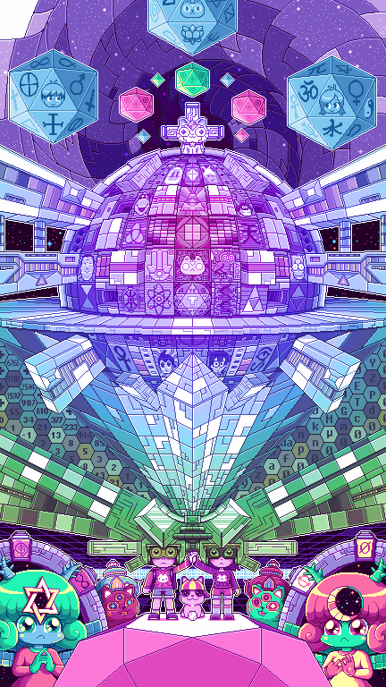
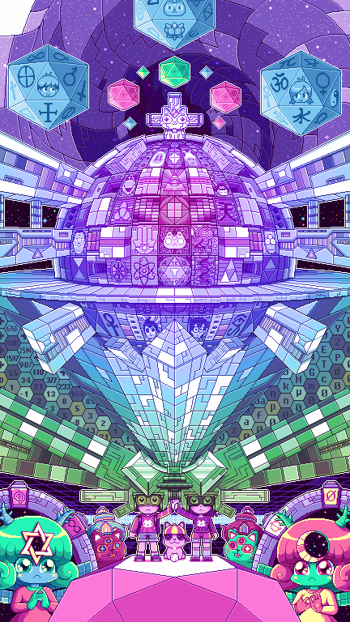

Esta es mi primera Página Web
Presentación:
Hola a todos! Soy Matias Ruiz, soy Licenciado en Diseño Gráfico graduado en la Universidad Abierta Interamericana en el año 2020 y estudiante de la Tecnicatura Universitaria en Programación - Comisión 5.
Actualmente me dedico a realizar diferentes trabajos relacionados al Diseño Gráfico (Diseño editorial, diseño web, retoque fotográfico, diseño de presentaciones, packaging, entre otros) en aplicaciones de trabajo como Upwork o Freelancer.
Otros datos random:
- A los 3 años mi tío, hijo único, nos heredó una Atari con dos juegos porque a él le habían comprado algo mejor (una Family game). Yo supongo que a partir de esa edad comenzó mi obsesión con las pantallas.
- No tengo recuerdos de esa consola, solo anécdotas que cuentan mi hermano y mis viejos pero de la Family game si me acuerdo, fue mi primer amor. Comprar o alquilar un juego era toda una aventura.
- Mi primera computadora fue una Pentium 3 que compraron mis viejos en el 2002 con mi convencimiento de que la computadora iba a servir para los estudios, pobres ilusos.
- Llega la computadora y amigo de mi viejo que nos la armó instaló un emulador de Sega con 600 juegos: a partir de ahí la sociedad perdió un niño.
- Seguiría contando sucesos pero se va a extender mucho, vivencias de la vida como esas son las que me fueron perfilando como alguien apasionado a la computación y la tecnología.
Aplicaciones favoritas:
- Youtube
- Instagram
- Spotify
A la hora de trabajar los programas que más utilizo son:
- Adobe Illustrator
- Adobe Photoshop
- Adobe Indesign
- Visual Studio Code
Unos gif animados que saque de internet hace mucho tiempo:
 
